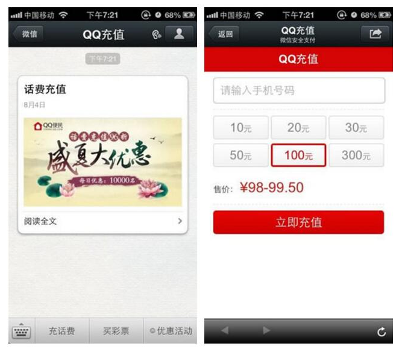
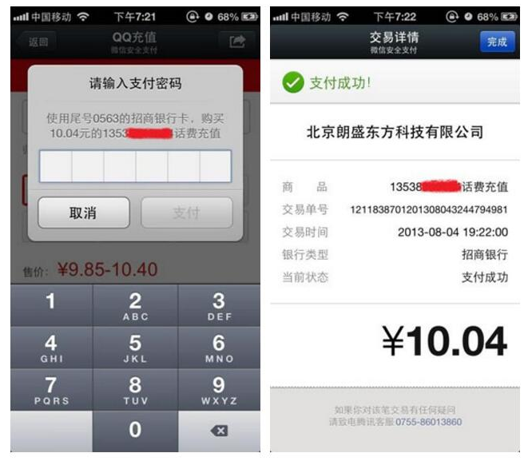
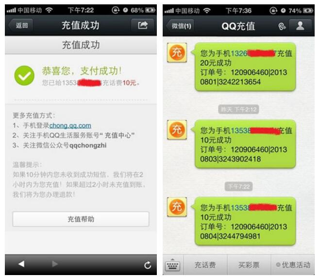
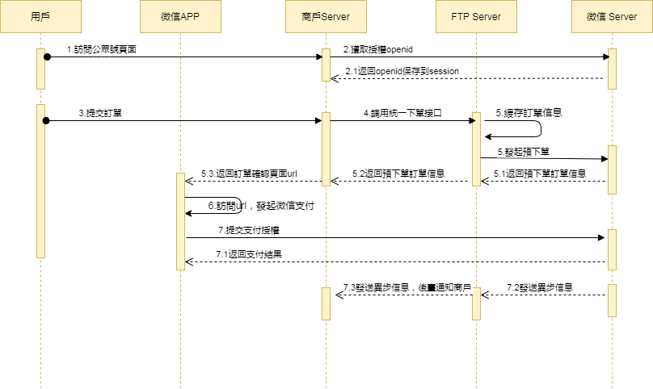

WeChat Official Account & Mini Program Payment QR Pay（Online）
This channel is technically connected. Merchants need to apply for a WeChat App ID and provide the App or Mini Program service to the WeChat institution for review before it can be used.
Online Payment
WeChat Official Account and Mini Program Payment
API Document
| Date | Version | Changes |
|---|---|---|
| 2025-12-19 | 1.0 | Initial draft |
1 Introduction
1.1 Document Overview
WeChat Official Account and Mini Program Payment is a payment method where the user opens the merchant's H5 page in WeChat, and the merchant invokes the JSAPI interface provided by WeChat Pay on the H5 page to invoke the WeChat Pay module to complete payment. Application scenarios include:
1) The user enters the merchant's official account within the WeChat official account, opens a certain main page, and completes payment
2) The user's friends share the merchant page link in Moments, chat windows, etc. The user clicks the link to open the merchant page and completes payment
3) Convert the merchant page into a QR code. After the user scans the QR code, the page is opened in the WeChat browser to complete payment
Payment flow:
The merchant already has an H5 mall website. When the user opens the web page in WeChat via a message or by scanning a QR code, WeChat Pay can be called to complete the order purchase flow.
Step (1): The merchant sends graphic messages or attracts users to click into the merchant web page through custom menus.
Step (2): Enter the merchant web page, the user selects to purchase, and completes the selection process.

Step (3): Invoke the WeChat Pay control, and the user starts to enter the payment password.
Step (4): Password verification passes, and the payment is successful. The merchant backend receives a notification of successful payment.

Step (5): Return to the merchant page to display the successful purchase. This page is customized by the merchant.
Step (6): The official account sends a message prompting successful shipment. This step is optional.

Note: The merchant can also generate a QR code from the link of the product web page. The user can scan it to open the page and complete the purchase payment.
Interaction details:
The following are the interaction details of the payment scenario. Please read carefully to design the logic of the merchant page:
(1) The user opens the merchant web page to select products and initiates payment. The backend program is called through JavaScript on the web page. A pre-order is generated through the order API, and the interface will return the official account payment information content.
(1) Call the getBrandWCPayRequest interface through JavaScript on the web page, pass in the official account payment information content, initiate a WeChat Pay request, and the user enters the payment flow.
(2) After the user successfully pays and clicks the Done button, the merchant's frontend will receive the JavaScript return value. The merchant can directly jump to a static page for successful payment to display.
(3) The merchant backend receives a successful payment callback notification from the platform, marking the order payment as successful.
Note: The triggering of (2) and (3) is not guaranteed to follow a strict timing sequence. The JS API return value serves as a trigger for the merchant web page jump, but the merchant backend should only perform real successful payment processing after receiving the backend successful payment callback notification.
1.2 Intended Audience
For technical or business personnel of the merchant platform service provider to reference and query.
2 Solution Overview
2.1 Business Implementation Flow
API call sequence:
The Order API, Payment Notification API, and Query Order API all involve the signing process, and the calls must be completed on the merchant server side. The sequence diagram is as follows:

3 Data Format
3.1 Submitted Data
Uses HTTPS standard POST protocol. To ensure the receiver correctly receives the data, the transmitted data must be signed.
{
"service":"pay.weixin.jspay",
"order_no":"e181b46118ff4ea7818e3b82c453b6e9",
"body":"測試微信公衆號和小程序支付",
"amount":1.0,
"client_ip":"127.0.0.1",
"attach":"",
"is_raw":"1",
"limit_credit_pay":"0",
"sub_openid":"oAOWGsyf4fjHHMzS_wAzfEzGoyWQ",
"sub_appid":"oAOWGsyf4fj",
"callback_url":"http://localhost/pay/result.html",
"notify_url":"http://localhost/pay/notify",
"client_id":"1002",
"store_id":"1001002",
"nonce_str":"xo4y0d2t",
"sign":"283C8AB5E7966E4BD600D15FE6247502",
"lang":"en_US"
}
3.2 Return Result Data Format
Successful return:
{
"message":"SUCCESS",
"order_no":"e181b46118ff4ea7818e3b82c453b6e9",
"transaction_id":"FTP202012181729390001",
"submit_time":"20201218172939",
"appid":"",
"token_id":"",
JSON"pay_info":"{"data":""}",
"nonce_str":"p4xgfk1a",
"sign":"717FDE30A7FA5F97A160765D48FE8BAA"
}
Error return:
{
"message":"Missing Merchant ID",
JSON"errors":[
{
"field":"mch_id",
"message":"Missing Merchant ID",
"code":"MISSING_FIELD"
}
]
}
If message returns a value other than SUCCESS, it indicates an API call error.
4 Digital Signature
The signature rules for this API follow the platform's unified digital signature specification, covering both basic key-value scenarios and nested field (e.g. items) scenarios, the MD5 algorithm, and multi-language code examples. Please refer to Digital Signature.
4.1 Request Headers
Request parameters:
| Field Name | Variable | Required | Type | Description |
|---|---|---|---|---|
| Content Type | Content-Type | Yes | String(32) | Value: application/json, the request content type |
5 API Description
5.1 Order API
5.1.1 Business Function
Initialize the order request, and generate a QR code through this request for scan payment.
5.1.2 Interaction Mode
Request: Backend synchronous request mode
Return result + notification: Backend request interaction mode + backend notification interaction mode
5.1.3 Request Parameter List
Request URL: https://api.fintechpaymenthub.com/openapi/v1/pay
The API is requested via POST JSON body
| Field Name | Variable | Required | Type | Description |
|---|---|---|---|---|
| Service Type | service | Yes | String(40) | Fixed: pay.weixin.jspay |
| Client ID | client_id | Yes | String(32) | Merchant client ID |
| Store ID | store_id | Yes | String(50) | sid |
| Merchant Order No. | order_no | Yes | String(32) | Internal order number of the merchant system, within 32 characters, may contain letters, ensure it is unique in the merchant system |
| Product Description | body | Yes | String(127) | Product description information |
| Amount | amount | Yes | String(15) | Total order amount (must be greater than 0), in yuan. |
| Notification URL | notify_url | Yes | String(255) | URL for receiving platform notifications, must be an absolute path, within 255 characters, format such as: http://wap.tenpay.com/tenpay.asp, ensure the platform can access this address via the Internet |
| Terminal IP | client_ip | Yes | String(16) | Machine IP that generated the order |
| Additional Information | attach | No | String(127) | Merchant additional information, can be used as extension parameter |
| Limit Credit Card | limit_credit_pay | No | String(1) | Restricts whether the user can use a credit card, value 1 disables credit card, value 0 or not passing this parameter does not disable it |
| Is Native | is_raw | No | String(1) | Value 1: Yes; Value 0: No; Not passing defaults to 0. Note: If integrating with Mini Program, fixed value: 1 |
| User openid | sub_openid | Yes | String(128) | User open_id |
| Official Account | sub_appid | Yes | String(32) | When initiating official account payment, the value is the AppID (Application ID) in the WeChat Official Platform basic configuration |
| Frontend URL | callback_url | No | String(255) | URL to redirect to after the transaction is completed, must be an absolute path, within 255 characters, format such as: http://wap.tenpay.com/callback.asp. Note: This address is only used as a frontend page jump, and notify_url must be used to notify the result as the final payment result. This parameter is only effective in non-native mode. |
| Random String | nonce_str | Yes | String(32) | Random string, no longer than 32 characters, each submission must pass a different value |
| Signature | sign | Yes | String(32) | See Chapter 4 "Signature Rules" |
| Language | lang | No | String(32) | Language |
5.1.4 Return Result
Data is returned immediately in JSON format
| Field Name | Variable | Required | Type | Description |
|---|---|---|---|---|
| Merchant Order No. | order_no | Yes | String(32) | Order number generated by the merchant |
| FTP Order No. | transaction_id | Yes | String(26) | Order number generated by FTP |
| Submit Time | submit_time | Yes | String(50) | Format is yyyyMMddhhmmss |
| Official Account ID | appid | Yes | String(32) | Service provider official account APPID |
| Dynamic Token | token_id | Yes | String(64) | Pre-payment ID generated by the platform, used in subsequent API calls |
| Native JS Payment Information | pay_info | No | String | Native js payment: returned when is_raw is 1, a JSON format string, used as a parameter for native js payment |
| Result Message | message | Yes | String(500) | Describes the query result, SUCCESS indicates success, otherwise returns other error messages |
| Random String | nonce_str | Yes | String(32) | Random string, no longer than 32 characters |
| Signature | sign | Yes | String(32) | See Chapter 4 "Signature Rules" |
5.1.5 Test Case
Test cases are provided for convenience of calling
Submitted data:
| Example |
|---|
| { "service":"pay.weixin.jspay", "order_no":"e181b46118ff4ea7818e3b82c453b6e9", "body":"測試微信公衆號和小程序支付", "amount":1.0, "client_ip":"127.0.0.1", "attach":"", "is_raw":"1", "limit_credit_pay":"0", "sub_openid":"oAOWGsyf4fjHHMzS_wAzfEzGoyWQ", "sub_appid":"oAOWGsyf4fj", "callback_url":"http://localhost/pay/result.html", "notify_url":"http://localhost/pay/notify", "client_id":"1002", "store_id":"1001002", "nonce_str":"xo4y0d2t", "sign":"283C8AB5E7966E4BD600D15FE6247502", "lang":"en_US" } |
Successfully returned data:
| Example |
|---|
| { "message":"SUCCESS", "order_no":"e181b46118ff4ea7818e3b82c453b6e9", "transaction_id":"FTP202012181729390001", "submit_time":"20201218172939", "appid":"", "token_id":"", "pay_info":"{"data":""}", "nonce_str":"p4xgfk1a", "sign":"717FDE30A7FA5F97A160765D48FE8BAA" } |
5.2 Native JS Payment API
5.2.1 Usage Example
Interface note: All incoming parameters are of string type! Pay attention when using weakly typed languages such as JavaScript and PHP.
Example code is as follows:
WeixinJSBridge.invoke('getBrandWCPayRequest',{
"appId" : "wx2421b1c4370ec43b", //Official account name, passed in by the merchant
"timeStamp":" 1395712654", //Timestamp, seconds since 1970
"nonceStr" : "e61463f8efa94090b1f366cccfbbb444", //Random string
"package" : "prepay_id=u802345jgfjsdfgsdg888",
"signType" : "MD5", //WeChat signature method
"paySign" : "70EA570631E4BB79628FBCA90534C63FF7FADD89" //WeChat signature
},function(res){
JSONif(res.err_msg == "get_brand_wcpay_request:ok" ) {}
// Use the above method to judge the frontend return. The WeChat team solemnly reminds: res.err_msg will return ok after the user successfully pays, but this is not absolutely reliable.
});
getBrandWCPayRequest parameters and return value definitions
5.2.2 Business Function
WeChat H5 page custom implements jsppay using the parameters returned by the interface.
If the native interface is not used when calling, this interface can be ignored
5.2.3 Interaction Mode
Request: Backend request interaction mode
Return result + notification: Backend request interaction mode + backend notification interaction mode
5.2.4 Request Parameter List
| Field Name | Variable | Required | Type | Description |
|---|---|---|---|---|
| Official Account ID | appId | Yes | String | Corresponds to the information in pay_info returned by the initialization request |
| Timestamp | timeStamp | Yes | String | Corresponds to the information in pay_info returned by the initialization request |
| Random String | nonceStr | Yes | String | Corresponds to the information in pay_info returned by the initialization request |
| Order Detail Extension String | package | Yes | String | Corresponds to the information in pay_info returned by the initialization request |
| Signature Method | signType | Yes | String | Corresponds to the information in pay_info returned by the initialization request |
| Signature | paySign | Yes | String | Corresponds to the information in pay_info returned by the initialization request |
| Language | lang | No | String | Language |
5.2.5 Return Result
Data is returned immediately in JSON format
| Field Name | Variable | Required | Type | Description |
|---|---|---|---|---|
| Payment Result | err_msg | Yes | String | get_brand_wcpay_request:ok Payment successful get_brand_wcpay_request:cancel User cancelled during payment get_brand_wcpay_request:fail Payment failed Other information |
Note: The JS API return result get_brand_wcpay_request:ok is only returned when the user has successfully completed payment. Due to the complexity of frontend interaction, get_brand_wcpay_request:cancel or get_brand_wcpay_request:fail can be uniformly handled as the user encountering an error or actively giving up, without detailed differentiation.
Note: For merchants implementing the native page, the request address must be provided with a payment authorization directory configured by the service provider. Payment cannot be invoked on the test official account provided by WeChat (during testing, it can be done in the File Transfer Assistant on the WeChat mobile client).
5.3 Official Account JS Payment API
5.3.1 Business Function
Initialize the JSAPI request and perform interaction verification by generating a token_id.
If the native js payment is used when calling, this interface can be ignored
5.3.2 Interaction Mode
Request: Backend request interaction mode
Return result + notification: Backend request interaction mode + backend notification interaction mode
5.3.3 Request Parameter List
Request URL: https://uat-api.fintechpaymenthub.com/pay/jsIntl
This request parameter is http queryString, i.e.: https://uat-api.fintechpaymenthub.com/pay/jsIntl?token_id=xxx, for example
https://uat-api.fintechpaymenthub.com/pay/jsIntl?token_id=9a0610bc519e782e6275e8c7dd94a445
Clicking this link in the service account can invoke payment (when the user clicks the WeChat Pay button on the page, this link is actually clicked. This method requires configuring a fixed payment authorization directory: https://uat-api.fintechpaymenthub.com/
but unlike native jsapi payment, there is no need to obtain those parameters for subsequent operations. During testing, you can put the assembled link into the File Transfer Assistant on the WeChat mobile client and click to invoke the payment interface)
| Field Name | Variable | Required | Type | Description |
|---|---|---|---|---|
| Dynamic Token | token_id | Yes | String(64) | Pre-payment ID generated by the platform, used in subsequent API calls |
5.4 Order Query API
5.4.1 Business Function
Query the platform's specific order information based on the merchant order number or FTP order number.
5.4.2 Interaction Mode
Backend system call interaction mode
5.4.3 Request Parameter List
Request URL: https://api.fintechpaymenthub.com/openapi/v1/query The request is made via POST JSON body
| Field Name | Variable | Required | Type | Description |
|---|---|---|---|---|
| Service Type | service | Yes | String(40) | Fixed: pay.weixin.jspay |
| Client ID | client_id | Yes | String(32) | Merchant client ID |
| Store ID | store_id | Yes | String(50) | sid |
| Merchant Order No. | order_no | No | String(32) | Order number generated by the merchant |
| FTP Order No. | transaction_id | No | String(26) | FTP order number. At least one of order_no and transaction_id is required. When both are present, transaction_id takes precedence |
| Random String | nonce_str | Yes | String(32) | Random string, no longer than 32 characters |
| Signature | sign | Yes | String(32) | See Chapter 4 "Signature Rules" |
| Language | lang | No | String(32) | Language |
5.4.4 Return Result
Data is returned immediately in JSON format
| Field Name | Variable | Required | Type | Description | |
|---|---|---|---|---|---|
| FTP Order No. | transaction_id | Yes | String(26) | Order number generated by FTP | |
| Merchant Order No. | order_no | Yes | String(32) | Order number generated by the merchant | |
| Store ID | store_id | Yes | String(50) | sid | |
| Submit Time | submit_time | Yes | String(32) | Format is yyyyMMddhhmmss | |
| Transaction Status | trade_state | Yes | String(32) | SUCCESS—Payment successful NOTPAY—Pending payment PROCESSING—Processing REFUND—Refund CANCEL—Closed FAIL—Failed | |
| Amount | amount | Yes | Double | Total order amount (must be greater than 0), in RMB yuan. For example, if the total order amount is 1 yuan, amount is 1. | |
| Currency | currency | Yes | String(3) | 3-character ISO currency code, uppercase letters, RMB is CNY. | |
| Payer | payer | Yes | String(50) | Payer | |
| Payment Completion Time | pay_finish_time | Yes | String(32) | Payment completion time, format is yyyyMMddhhmmss, for example, December 27, 2009, 9:10:10 AM is represented as 20091227091010. Time zone is GMT+8 Beijing. | |
| Product Description | body | Yes | String(127) | Product description information | |
| Refund Amount | refund_amount | Yes | Double | Refund amount, in RMB yuan. For example, if the total order amount is 1 yuan, amount is 1. | |
| User Identifier | openid | Yes | String(128) | The unique identifier of the user under the service provider appid | |
| Third-party Merchant No. | out_transaction_id | Yes | String(32) | Corresponds to the transaction number in the Alipay transaction record bill details | |
| Additional Information | attach | No | String(127) | Merchant data packet, returned as-is | |
| Result Message | message | Yes | String(500) | Describes the query result, SUCCESS indicates success, otherwise returns other error messages | Describes the query result, SUCCESS indicates success, otherwise returns other error messages |
| Random String | nonce_str | Yes | String(32) | Random string, no longer than 32 characters | |
| Signature | sign | Yes | String(32) | See Chapter 4 "Signature Rules" |
5.4.5 Test Case
Test cases are provided for convenience of calling
Submitted data:
| Example |
|---|
| { "service":"pay.weixin.jspay", "order_no":"", "transaction_id":"FTP202012181729390001", "client_id":"1002", "store_id":"1001002", "nonce_str":"1ij4b418", "sign":"895182F9AC9520F0B764457B1FFAD365", "lang":"en_US" } |
Successfully returned data:
| Example |
|---|
| { "message":"SUCCESS", "transaction_id":"FTP202012181729390001", "order_no":"e181b46118ff4ea7818e3b82c453b6e9", "store_id":"1001002", "submit_time":"20201218172939", "trade_state":"SUCCESS", "amount":1, "currency":"HKD", "payer":"oAOWGsyf4fjHHMzS_wAzfEzGoyWQ", "pay_finish_time":"20201110111036", "body":"測試微信公衆號和小程序支付", "refund_amount":0, "nonce_str":"px7ikxjf", "sign":"F3E552424E117DF51128AAC9D722CA6D", "out_transaction_id":"127500000158202011104576413057", "attach":"" } |
5.5 Refund API
5.5.1 Business Function
The merchant initiates a refund for an order that has been successfully paid, and the operation result is returned synchronously in the same session.
I. Refund Method
Currently only supports refund via the original payment route.
Note: Refunds to bank cards are not instant. Each bank has a different processing speed. Generally, the refund arrives within 1-3 working days after initiation.
For partial refunds of the same order, you need to set the same order number and different out_refund_no. If a refund fails and is resubmitted, the original out_refund_no should be used. The total refund amount cannot exceed the user's actual payment amount (cash voucher amounts cannot be refunded).
II. Refund Limitations
Merchants should pay attention to the refund limitations during refund operations to avoid initiating refund requests that will not succeed. The main refund limitations are as follows:
1. On the platform, as long as the cumulative refund amount does not exceed the total payment amount of the transaction order, a transaction order can be refunded multiple times. The refund application number (this parameter exists in the refund API) uniquely identifies a refund, rather than the transaction order number identifying a refund. The refund application number is generated by the merchant, so the merchant
must ensure the uniqueness of the refund application number. Merchants should pay special attention during the refund process that another refund can only be re-initiated when it is certain that the refund has failed.
2. Currently, most banks support both full refunds and partial refunds, but a few banks do not support full refunds or partial refunds, or
do not support refunds. In this case, the merchant can coordinate with the seller to refund to the Alipay account.
Currently only the keyless refund API is provided. Merchants who need a keyed refund API, please contact business for explanation.
5.5.2 Interaction Mode
Backend system call interaction mode
5.5.3 Request Parameter List
Request URL: https://api.fintechpaymenthub.com/openapi/v1/refund The request is made via POST JSON body
| Field Name | Variable | Required | Type | Description |
|---|---|---|---|---|
| Service Type | service | Yes | String(40) | Fixed: pay.weixin.jspay |
| Client ID | client_id | Yes | String(32) | Merchant client ID |
| Store ID | store_id | Yes | String(50) | sid |
| Merchant Order No. | order_no | Yes | String(32) | Original order number generated by the merchant |
| FTP Order No. | transaction_id | Yes | String(26) | FTP order number generated for the original order |
| Merchant Refund No. | out_refund_no | Yes | String(32) | Merchant refund number, within 32 characters, may contain letters, ensure it is unique in the merchant system. Multiple requests with the same refund number, the platform processes as one order and only refunds once. If the refund is unsuccessful, please use the original refund number to re-initiate to avoid duplicate refunds. |
| Remarks | remarks | No | String(255) | Refund remarks |
| Refund Amount | refund_fee | Yes | String(15) | Total refund amount, in yuan, partial refund is supported |
| Random String | nonce_str | Yes | String(32) | Random string, no longer than 32 characters |
| Signature | sign | Yes | String(32) | See Chapter 4 "Signature Rules" |
| Language | lang | No | String(32) | Language |
5.5.4 Return Result
Data is returned immediately in JSON format
| Field Name | Variable | Required | Type | Description | |
|---|---|---|---|---|---|
| FTP Order No. | transaction_id | Yes | String(26) | Order number generated by FTP | |
| Merchant Order No. | order_no | Yes | String(32) | Order number generated by the merchant | |
| Merchant Refund No. | out_refund_no | Yes | String(32) | Merchant refund number, within 32 characters, may contain letters, ensure it is unique in the merchant system. Multiple requests with the same refund number, the platform processes as one order and only refunds once. If the refund is unsuccessful, please use the original refund number to re-initiate to avoid duplicate refunds. | |
| Submit Time | submit_time | Yes | String(32) | Format is yyyyMMddhhmmss | |
| Order Amount | amount | Yes | Double | Order amount, in yuan | |
| Refund Amount | refund_amount | Yes | Double | Refund amount, in yuan | |
| Result Message | message | Yes | String(500) | Describes the query result, SUCCESS indicates success, otherwise returns other error messages | Describes the query result, SUCCESS indicates success, otherwise returns other error messages |
| Random String | nonce_str | Yes | String(32) | Random string, no longer than 32 characters | |
| Signature | sign | Yes | String(32) | See Chapter 4 "Signature Rules" |
5.5.5 Test Case
Test cases are provided for convenience of calling
Submitted data:
| Example |
|---|
| { "service":"pay.weixin.jspay", "order_no":"", "transaction_id":"FTP202012181729390001", "out_refund_no":"T1608283929815", "remarks":"Test Pay Orders", "refund_fee":1.0, "client_id":"1002", "store_id":"1001002", "nonce_str":"2sdups00", "sign":"9B4ACDC82A23E330FBF3C9536D720541", "lang":"en_US" } |
Successfully returned data:
| Example |
|---|
| { "message":"SUCCESS", "order_no":"e181b46118ff4ea7818e3b82c453b6e9", "transaction_id":"FTP202012181729390001", "out_refund_no":"T1608283929815", "submit_time":"20201218173210", "amount":1, "refund_amount":1, "nonce_str":"kltsts6u", "sign":"D41D8CD98F00B204E9800998ECF8427E" } |
5.6 Refund Query API
5.6.1 Business Function
After submitting a refund application, query the refund status by calling this API.
5.6.2 Interaction Mode
Backend system call interaction mode
5.6.3 Request Parameter List
Request URL: https://api.fintechpaymenthub.com/openapi/v1/refundQuery The request is made via POST JSON body
| Field Name | Variable | Required | Type | Description |
|---|---|---|---|---|
| Service Type | service | Yes | String(40) | Fixed: pay.weixin.jspay |
| Client ID | client_id | Yes | String(32) | Merchant client ID |
| Store ID | store_id | Yes | String(50) | sid |
| Merchant Order No. | order_no | No | String(32) | Merchant order number returned by refund, also the merchant order number of the order |
| FTP Order No. | transaction_id | No | String(26) | FTP order number returned by refund |
| Merchant Refund No. | out_refund_no | No | String(32) | Refund number generated by the merchant |
| Third-party Refund No. | to_order_sn | No | String(255) | Third-party refund number. If multiple exist, priority order is: to_order_sn > out_refund_no > transaction_id > order_no |
| Random String | nonce_str | Yes | String(32) | Random string, no longer than 32 characters |
| Signature | sign | Yes | String(32) | See Chapter 4 "Signature Rules" |
| Language | lang | No | String(32) | Language |
5.6.4 Return Result
Data is returned immediately in JSON format
| Field Name | Variable | Required | Type | Description |
|---|---|---|---|---|
| FTP Order No. | transaction_id | Yes | String(26) | FTP order number corresponding to the order |
| Merchant Order No. | order_no | Yes | String(32) | Merchant order number corresponding to the order |
| Refund Amount | total_fee | Yes | Double | Total refund amount, in yuan |
| Refund Count | refund_count | Yes | Int | Number of refund records |
| Merchant Refund No. | out_refund_no_n | Yes | String(32) | Merchant refund number, within 32 characters, may contain letters, ensure it is unique in the merchant system. Multiple requests with the same refund number, the platform processes as one order and only refunds once. If the refund is unsuccessful, please use the original refund number to re-initiate to avoid duplicate refunds. First refund return field: out_refund_no_1, Second refund return field: out_refund_no_2, And so on. |
| FTP Refund Order No. | refund_id_n | Yes | String(32) | FTP refund order number |
| Third-party Refund No. | to_order_sn_n | Yes | String(32) | Third-party refund number |
| Refund Amount | refund_amount_n | Yes | Double | Refund amount, in yuan |
| Refund Time | refund_time_n | Yes | String(14) | yyyyMMddHHmmss |
| Refund Status | refund_status_n | Yes | String(16) | Refund status: SUCCESS—Refund successful FAIL—Refund failed PROCESSING—Refund processing NOTSURE—Undetermined, the merchant needs to re-initiate with the original refund number. CHANGE—Transferred to disbursement. When refunding to the bank, the user's bank account is found to be invalid or frozen, causing the original-route refund to the bank card to fail. The funds return to the merchant's cash account, requiring manual intervention by the merchant to refund via offline or platform transfer. |
| Result Message | message | Yes | String(500) | Describes the query result, SUCCESS indicates success, otherwise returns other error messages |
| Random String | nonce_str | Yes | String(32) | Random string, no longer than 32 characters |
| Signature | sign | Yes | String(32) | See Chapter 4 "Signature Rules" |
5.6.5 Test Case
Test cases are provided for convenience of calling
Submitted data:
| Example |
|---|
| { "service":"pay.weixin.jspay", "client_id":"1002", "store_id":"1001002", "transaction_id":"FTP202012181729390001", "order_no":"", "out_refund_no":"", "to_order_sn":"", "nonce_str":"68rukhqg", "sign":"63C31D258D23C616457896D6F300C382", "lang":"en_US" } |
Successfully returned data:
| Example |
|---|
| { "message":"SUCCESS", "transaction_id":"FTP202012181624320001", "order_no":"TALWEBO20210514114611632", "total_fee":1, "refund_count":1, "nonce_str":"401n5buh", "out_refund_no_1":"T9802e9e18ff340548357bfba730d407", "refund_id_1":"FTP202105141152540001", "refund_amount_1":1, "to_order_sn_1":"121500000214202105141132335702", "refund_time_1":"20210514115254", "refund_status_1":"SUCCESS", "sign":"7A5CA8D8BD0F4E9F78641F9433FD3A4D" } |
5.7 Payment Notification API
5.7.1 Business Function
After payment is completed, the system will notify the relevant data to the notify_url filled in when placing the order. The notification URL is the notify_url parameter submitted in the payment API. After payment is completed, the platform will send the relevant payment and user information to the URL,
and the merchant needs to receive and process the information.
During backend notification interaction, if the platform receives a response from the merchant that is not the pure string success or if it takes more than 5 seconds to return, the platform considers the notification failed. The platform will indirectly re-initiate the notification through a certain strategy (notification frequency is 0/15/15/30/180/1800/1800/1800/1800/3600, unit: seconds) to improve the notification success rate as much as possible, but does not guarantee that the notification will ultimately succeed.
Since backend notifications may be re-sent, the same notification may be sent to the merchant system multiple times. The merchant system must be able to correctly handle duplicate notifications.
The recommended approach is: when receiving a notification for processing, first check the status of the corresponding business data to determine whether the notification has already been processed. If not, process it; if already processed, directly return a success result. Before checking and processing the status of the business data, use a data lock for concurrency control to avoid data confusion caused by function reentry.
Special note: After the merchant backend receives the notification parameters, it must verify the order number order_no and order amount amount in the received notification parameters against the order and amount in its own business system. Only after the verification is consistent can the database order status be updated. Backend notification is performed through the notify_url in the request, and the data stream is returned via POST. The specific information is an XML format string (merchants should pay attention when processing).
5.7.2 Interaction Mode
Backend notification mode
5.7.3 Return Parameter List
Data is returned immediately in JSON format
| Field Name | Variable | Required | Type | Description | |
|---|---|---|---|---|---|
| FTP Order No. | transaction_id | Yes | String(26) | Order number generated by FTP | |
| Merchant Order No. | order_no | Yes | String(32) | Order number generated by the merchant | |
| Third-party Merchant No. | out_transaction_id | Yes | String(32) | Corresponds to the transaction number in the Alipay transaction record bill details | |
| Store ID | store_id | Yes | String(50) | sid | |
| Submit Time | submit_time | Yes | String(32) | Format is yyyyMMddhhmmss | |
| Transaction Status | trade_state | Yes | String(32) | SUCCESS—Payment successful PROCESSING—Processing CANCEL—Closed FAIL—Failed | |
| Order Amount | amount | Yes | Double | Total order amount (must be greater than 0), in RMB yuan. For example, if the total order amount is 1 yuan, amount is 1. | |
| Order Currency | currency | Yes | String(3) | 3-character ISO currency code, uppercase letters, RMB is CNY. | |
| Payer | payer | Yes | String(50) | Payer | |
| Payment Completion Time | pay_finish_time | Yes | String(32) | Payment completion time, format is yyyyMMddhhmmss, for example, December 27, 2009, 9:10:10 AM is represented as 20091227091010. Time zone is GMT+8 Beijing. | |
| User Identifier | openid | Yes | String(128) | The unique identifier of the user under the merchant appid | |
| Additional Information | attach | No | String(127) | Merchant data packet, returned as-is | |
| Transaction Type | trade_type | Yes | String(32) | Fixed: pay.weixin.jspay | |
| Payment Currency | pay_currency | No | String(3) | Currency used for payment | |
| Is Subscribed to Official Account | is_subscribe | Yes | String(1) | Whether the user has subscribed to the service provider's official account, Y-Subscribed, N-Not subscribed (returned by WeChat parameter) | |
| Payment Currency | pay_currency | No | String(32) | Payment currency, needs to be returned according to the actual situation | |
| Result Message | message | Yes | String(500) | Describes the query result, SUCCESS indicates success, otherwise returns other error messages | Describes the query result, SUCCESS indicates success, otherwise returns other error messages |
| Random String | nonce_str | Yes | String(32) | Random string, no longer than 32 characters | |
| Signature | sign | Yes | String(32) | See Chapter 4 "Signature Rules" |
5.7.4 Test Case
Test cases are provided for convenience of calling
Submitted data:
| Example |
|---|
| { "message":"SUCCESS", "order_no":"3b81035507af4e9f8c16b31b845c46ab", "transaction_id":"FTP202012181733470001", "out_transaction_id":"2020111022001311418934322172", "store_id":"1001002", "submit_time":"20201218173347", "trade_state":"SUCCESS", "amount":1, "currency":"HKD", "payer":"oAOWGsyf4fjHHMzS_wAzfEzGoyWQ", "pay_finish_time":"20201110111036", "openid":"oAOWGsyf4fjHHMzS_wAzfEzGoyWQ", "nonce_str":"jql19ta3", "trade_type":"pay.weixin.jspay", "sign":"363390D80E511703FF401A55552E3D35", "pay_currency":"HKD", "is_subscribe":"Y" } |
6 Error Codes
| Error Code | Description |
|---|---|
| MISSING_FIELD | Field not provided |
| INVALID_FIELD | Field validation error |
| NO_EXISTS | Data does not exist |
| OTHER | Other error |
| INVALID_SCOPE | Data out of range |
| INVALID_LENGTH | Data length exceeds limit |
| INCORRECT_SIGNATURE | Invalid signature |
| EXPIRED_ORDER | Order expired |
| PAY_GATEWAY_FAIL | Payment gateway exception |
| UNKNOWN_ERROR | Unknown error |
| XML_FORMAT_ERROR | XML format error |
| REQUIRE_POST_METHOD | Please use POST method |
| ACCESS_DENIED | Access denied |
| POST_DATA_EMPTY | POST data is empty |
| NOT_UTF8 | Encoding format error |
| ORDER_CLOSED | Order closed |
| NO_AUTH | Insufficient permissions |
| LACK_PARAMS | Missing parameters |
| INVALID_STATUS | Invalid status |
| INVALID_SERVICE | Invalid service type |
| SN_IS_EXISTS | Number already exists |
| NOTIFY_FAIL | Notification exception |
| URL_FORMAT_ERROR | URL format is incorrect |
| IP_FORMAT_ERROR | IP format is incorrect |
| DATE_FORMAT_ERROR | Date format is incorrect |
| TRADE_NOT_EXIST | Transaction does not exist |
| TRADE_HAS_SUCCESS | Transaction has been paid |
| TRADE_FAILED | Transaction failed |
| TRADE_TIMEOUT | Transaction timeout |
| INVALID_ORDER_STATUS | Invalid order status |
| REVERSE_FAILED | Authorization reversal failed |
| DEDUCTIONS_FAILED | Deduction failed |
| REFUND_FAILED | Deduction failed |
| INVALID_CLIENT_ID | Invalid client ID |
| INVALID_STORE_ID | Invalid store ID |
| INVALID_AMOUNT | Incorrect transaction amount |
| INVALID_REFUND_FEE | Incorrect refund amount |
| VALID_FLOW_FAIL | Request too frequent |
| UNSUPPORTED_SERVICE | Unsupported service type |
| DATA_NOT_EXIST | Queried data does not exist |
| ACCOUNT_LOCKED | Merchant or store account is locked |